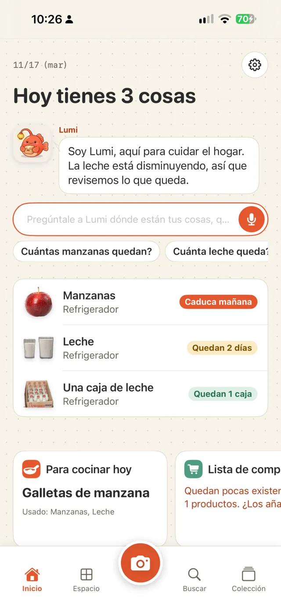
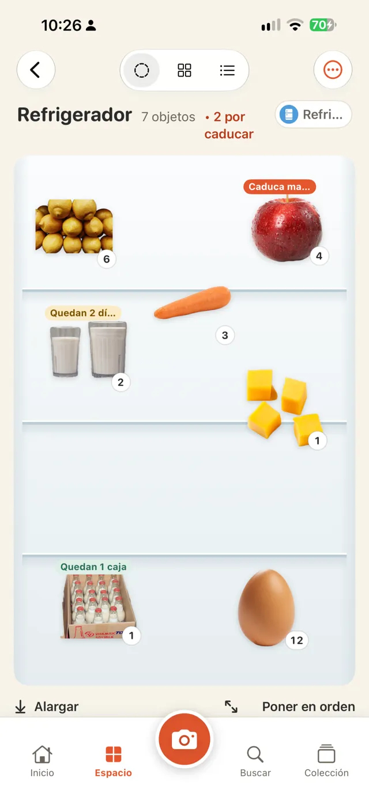
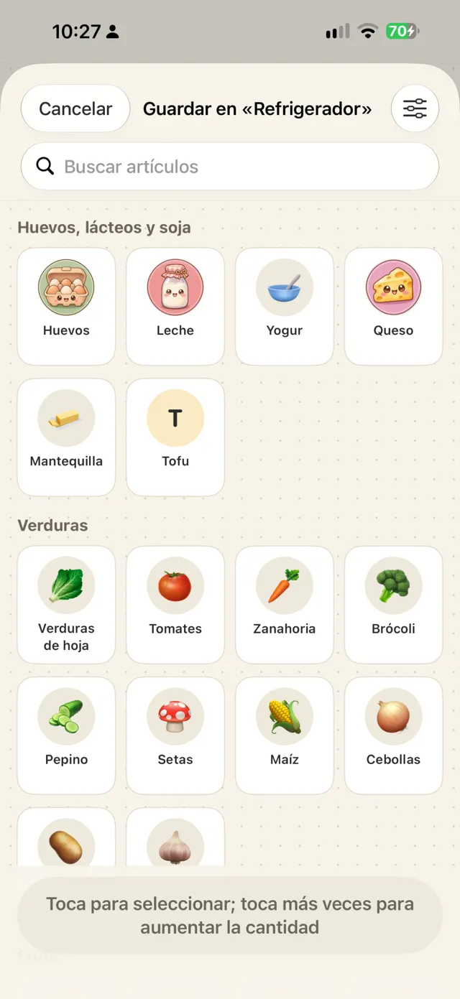
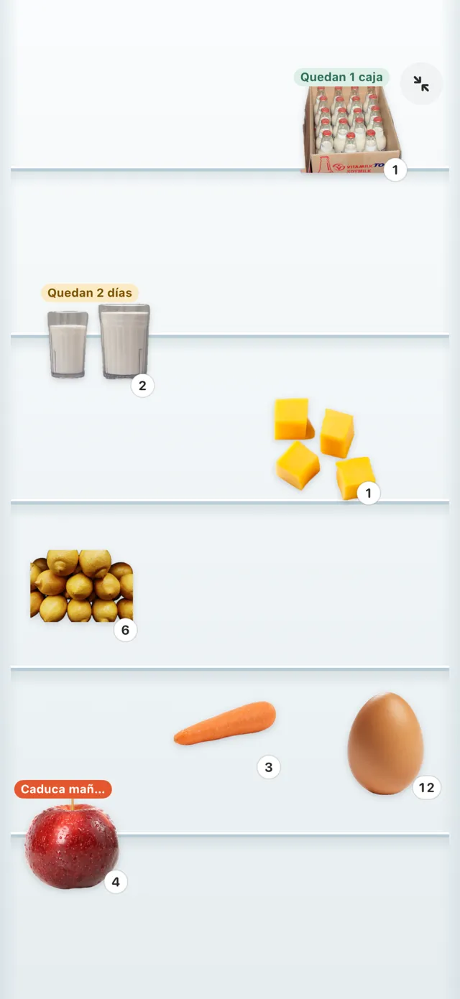
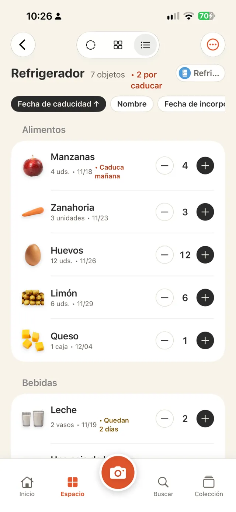
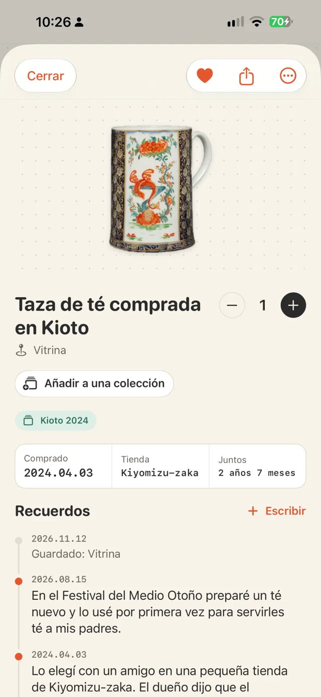
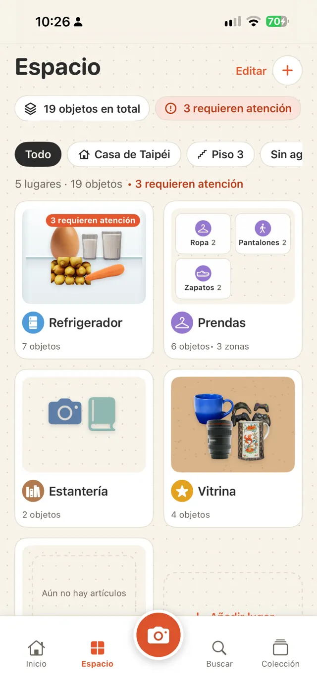
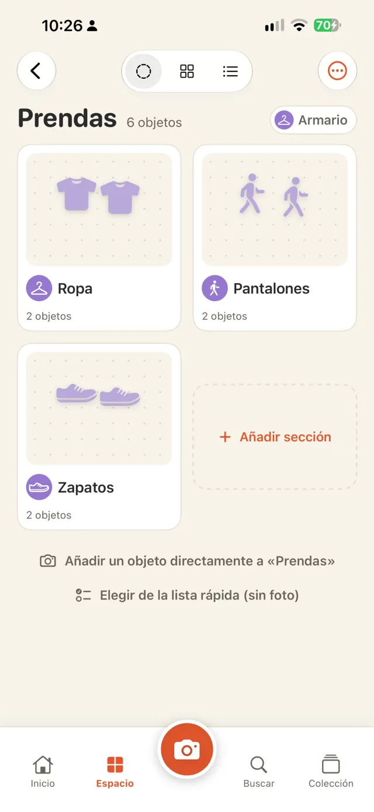
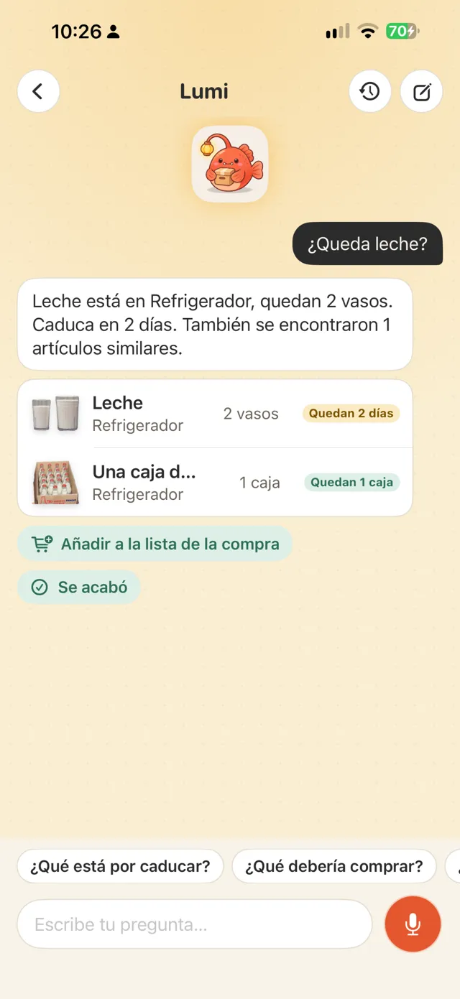
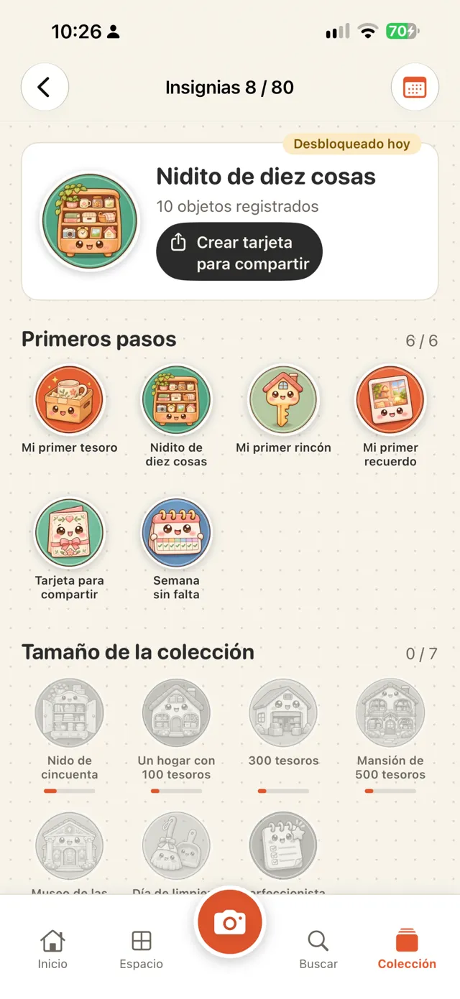

Inventario del hogar y recuerdos para iPhone
Haz una foto para guardarlo.
Busca cuando lo necesites.
La leche del frigorífico, el papel de cocina del armario, los libros de la estantería o aquella taza que trajiste de un viaje. Haz una foto y guarda en tu iPhone dónde está cada cosa, cuántas unidades quedan y cuándo caduca.
Descargar en el App Store- ✓ Descarga gratuita, con 3 espacios incluidos
- ✓ Sin cuenta
- ✓ Los datos permanecen en tu iPhone

Añadir
Haz una foto y guárdala sin fondo
Enfoca un objeto y pulsa el disparador. El fondo se elimina automáticamente. La misma cámara lee códigos de barras: busca alimentos en Open Food Facts y libros en Open Library. Al volver de comprar, usa el escaneo continuo para guardar varios productos seguidos.

Lista rápida
Añade lo habitual sin hacer fotos
Si compras huevos, leche o papel de cocina a menudo, tócalos en la Lista rápida para añadirlos. Vuelve a tocar para aumentar la cantidad. La fecha de caducidad se calcula a partir de su duración habitual. El frigorífico, el armario, el botiquín y el ropero tienen listas distintas. Puedes cambiar sus elementos y usar tus propias fotos.

Tres vistas
Cambia entre exposición, cuadrícula y lista
La vista de exposición coloca las fotos sobre la puerta de un frigorífico, papel punteado o un corcho. Puedes moverlas y cambiar su tamaño. La cuadrícula ayuda a encontrar objetos. La lista sirve para revisar existencias: tiene botones para sumar y restar unidades, y puedes deslizar para marcar algo como agotado.
Ampliar
Mira las fotos a pantalla completa
Si ya no cabe nada en la vista de exposición, toca Alargar para añadir otra página y desliza hacia abajo para verla. Ampliar oculta el título y los botones. Aun así, puedes mover las fotos, cambiar su tamaño y tocarlas para abrir cada objeto.

Caducidad
Comprueba la fecha que lee el teléfono
Al hacer una foto, el teléfono lee la fecha de caducidad impresa en el envase para que la confirmes. Recibirás una notificación unos días antes; tú eliges con cuánta antelación.

Recuerdos
Guarda la historia de cada objeto
A una taza de un viaje o un regalo de un amigo puedes añadirle fotos, una fecha, un lugar y unas líneas. Agrupa los objetos en colecciones como «Kioto 2024». La sección «Tal día como hoy» los recupera en la pantalla de inicio.

Espacios
Elige un espacio o crea el tuyo
Hay plantillas para frigorífico, Trastero 800 (un espacio de almacenaje al que se puede entrar, de unos 80 cm de profundidad), armario, estantería, ropero, vitrina, botiquín y cajas de mudanza. También puedes elegir un icono y ponerle nombre a tu espacio. Si quieres, agrúpalos por vivienda o planta.

Niveles
Crea espacios dentro de otros
Dentro de Ropa puedes crear Ropa de vestir, Pantalones y Zapatos. La tarjeta de Ropa muestra los espacios que contiene. Para mover uno, usa «Mover a…» en el menú o mantén pulsada su tarjeta y arrástrala sobre otra. Las categorías también tienen subcategorías, como Ropa › Pantalones, que se seleccionan automáticamente al guardar.

Preguntar a Lumi
Pregunta dónde está algo
Desde la pantalla de inicio, escribe a Lumi, la mascota, «¿dónde está mi pasaporte?» o «¿queda leche?». También puedes mantener pulsado para hablar. Lumi te dice dónde está, cuánto queda y cuándo caduca. El reconocimiento de voz se hace en el teléfono siempre que el dispositivo lo permita. Sin activar la IA, Lumi puede buscar por nombres, categorías y espacios.

Consulta lo que tienes en casa
- Mira qué hay en el frigorífico antes de comprar
- Cocina primero lo que está por caducar
- Encuentra dónde guardaste las pilas AA
- Recuerda a quién le prestaste un libro
- Anota qué hay en cada caja de la mudanza
- Ordena los recuerdos de tus viajes
- Revisa si ha caducado algo del botiquín
Mira cómo funciona en 50 segundos
Cambia entre las tres vistas del frigorífico, ajusta cantidades, mira dentro de Ropa, abre los recuerdos de un objeto y pregunta a Lumi qué está por caducar.
Activa la IA si quieres
Todas las funciones se pueden usar sin IA. Si decides activarla, puedes elegir entre dos opciones. Se utiliza cuando pulsas un botón de IA y, una vez al día, para redactar la breve nota de la pantalla de inicio.
Integrada en Apple
Apple Intelligence en tu iPhone: gratis, sin conexión y sin que los datos salgan del teléfono. Requiere un iPhone compatible y iOS 26 o posterior.
Tu propia clave de API
Gemini, Claude, DeepSeek y otros servicios. La clave se guarda únicamente en el llavero de este iPhone. Los datos van directamente al servicio que elijas, sin pasar por nosotros.
- Poner nombre: identifica un objeto en la foto y sugiere una categoría y una unidad
- Revisar un espacio: indica qué comer primero del frigorífico, qué reponer en el armario o qué ha caducado en el botiquín (no ofrece consejos médicos)
- Buscar con una frase: añade sinónimos antes de buscar
- Redactar un recuerdo: convierte unas palabras en un párrafo sin añadir datos que no hayas dado
Consulta las insignias y guarda tarjetas
Si pasan treinta días sin que caduque nada en el frigorífico, consigues la insignia «Guardián del frigorífico». Puedes guardar como imágenes las insignias, las historias de los objetos y el resumen del año. Por defecto, no incluyen la ubicación ni el precio.

Consulta los detalles
| Dispositivo | iPhone (iOS 18 o posterior) |
|---|---|
| Idiomas | Inglés, chino tradicional, chino simplificado, japonés, coreano y tailandés |
| Precio | Descarga gratuita (con un anuncio de banner, 3 espacios y las 2 conversaciones más recientes con Lumi). Pro elimina los anuncios y ambos límites: 1 US$ por semana, 3 US$ por mes o un pago único de 5 US$ |
| Cuenta | No hace falta |
| Datos | Solo en este iPhone; puedes exportarlos como CSV. Los objetos eliminados se pueden recuperar durante 30 días |
| Conexión | Solo se usa para consultar códigos de barras y para el servicio de IA que elijas |
Ten en cuenta estos límites
- Todavía no hay sincronización con iCloud ni uso compartido con la familia
- Si un producto no está en las bases de datos de códigos de barras, tendrás que ponerle nombre. La próxima vez que escanees ese código, se usará el nombre que le diste
- La eliminación del fondo depende de la foto. Si falla, se utiliza la foto original
Consulta dónde se guardan tus datos
- No hay cuentas ni un servidor propio
- La versión gratuita solo muestra anuncios no personalizados, sin seguimiento
- La cámara y las fotos solo se usan cuando tú decides utilizarlas
Empieza por el frigorífico
Abre Stashlight, elige Frigorífico y fotografía las tres cosas que compras más a menudo.
Descargar en el App Store